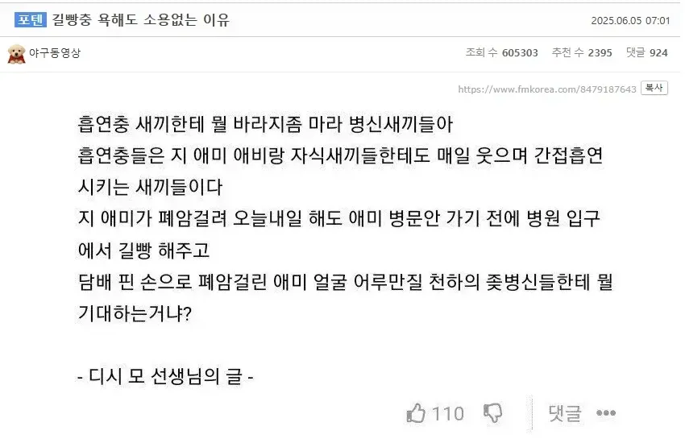

길빵충들 보이면 어떻게든 피해를 입히고 싶은데 방법이 없네
휴대용 선풍기로 연기 돌려주니까 좋아죽던데
말 싸움하다가 난 버스 타고 도망감
꿀잼이겠는데 ㅋㅋ
흡연자 자녀들에게 무엇을 바라시는 겁니까?
흡연자들은 본인의 부모와 자녀에게도 매일 간접흡연의 피해를 줄 수밖에 없습니다.
어머니께서 폐암으로 투병 중이신 상황에서도, 병문안을 가기 전에 병원 입구에서 길거리 흡연을 하는 모습을 보면 어떤 생각이 드시겠습니까?
담배를 피우는 손으로 폐암에 걸린 어머니의 얼굴을 어루만지면서, 과연 자녀에게 무엇을 기대하시는 건가요?
그리고 매번 달리는
담배피는 일진한테 쳐맞기라도 했냐?ㅋㅋ
담배 연기로 코끝을 때리는것도 포함인지 묻고싶음
110일째.....
평생힘내라..
고맙다...!!
길바닥 걷거나 자전거 타면서 피는게 진짜 너무너무 싫음
흡연충 입장에서 저건 맞는 소리다. 인정할건 인정 해야지.
금연 못하는 의지박약들에게 뭘 바라느냐
그럼 범인색출해서 죽이려고 돌아댕길듯